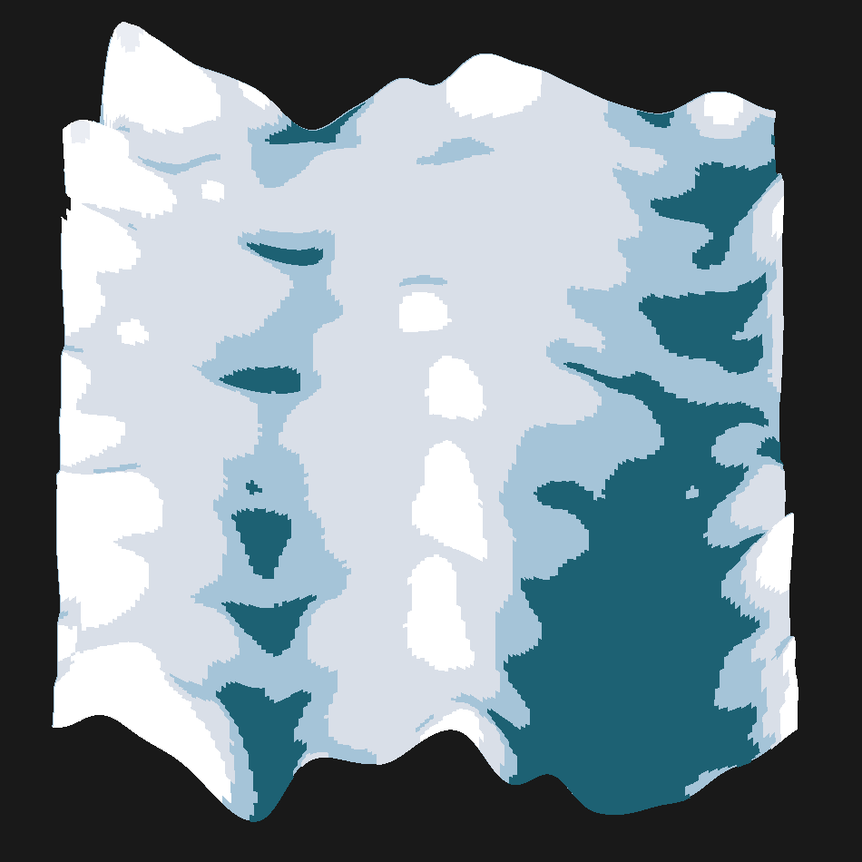

SparSCit documentation
{kind=link}

SparSCit is a Python library for processing, analyzing, and visualizing single-cell histone modification sequencing data (such as NanoC&T, scCUT&Tag, scChIP-seq). It provides a complete pipeline from raw fragment loading through embedding, clustering, landscape visualization, and statistical testing — all built on top of AnnData.
Installation
Install from PyPI:
pip install sparscit
Or install in development mode:
pip install -e .
Quick Start
import sparscit as sc
# Configure global settings
sc.set_defaults(n_jobs=-1, figsize=(10, 5))
# Load data
adata = sc.ld.fragments("fragments.tsv.gz", genome="hg38")
# Filter cells and features
sc.tl.filter(adata, layers=["counts"], min_obs_counts=[100])
# Create layer configurations
lc = sc.tl.make_layer_config(adata, layer="counts",
normalize_with_obs_counts=True, log_transform=True)
# Compute embeddings
sc.em.pca(adata, lc)
sc.em.spectral(adata, lc, n_components=30)
# Build neighbor graph and cluster
sc.gr.knn(adata, embedding_key="X_spectral")
sc.gr.leiden(adata)
# Visualize
sc.pl.embedding2d(adata, "X_umap", color="leiden")
Module Overview
Submodule |
Alias |
Purpose |
|---|---|---|
|
|
Data loading (fragments, references, GO terms) |
|
|
Core analysis tools (filtering, statistics, etc.) |
|
|
Graph construction, clustering, label transfer |
|
|
Dimensionality reduction and embeddings |
|
|
Visualization (embeddings, heatmaps, statistics) |
|
|
Advanced analysis (landscapes, HMMs, dynamics) |
Data Model
SparSCit operates on anndata.AnnData objects. Data is stored in:
.X — Main data matrix (cells × features)
.layers — Additional data layers (e.g., different count matrices)
.obs — Cell-level metadata (e.g., cluster assignments, pseudotime)
.var — Feature-level metadata (e.g., gene names, genomic coordinates)
.obsm — Multi-dimensional annotations (e.g., embeddings)
.obsp — Pairwise annotations (e.g., distance/connectivity matrices)
.uns — Unstructured annotations (e.g., community trees, GO results)